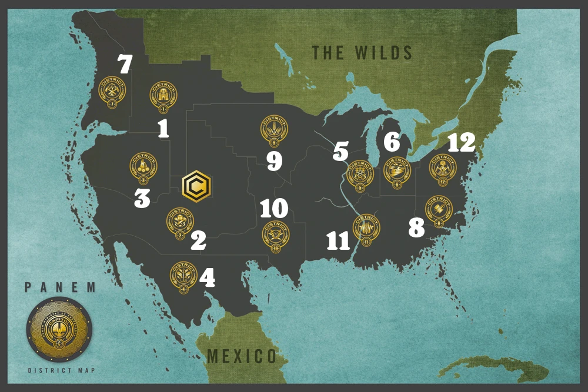

Historia

- El mundo fue destruido por infinidad de desastres.Despues de toda esta destruccion el
Capitolio, formada por las
personas mas poderosas , formaron Panem integrado por 13 districtos mas el capitolio.
- Durante todo el territorio de Panem habia mucha desigualdad, ante estas situaciones los
distritos se alzaron en rebelión contra el control del Capitolio. En lo que ahora se conoce como
los Días Oscuros, los doce distritos que
aún están en pie fueron derrotados y el que fuera el Distrito 13 fue completamente destruido
como una advertencia
para los sobrevivientes.
- Además, el Capitolio cuenta con una estructura aún más retorcida para mantener a sus
ciudadanos a raya: los
Juegos del Hambre. Cada año, cada distrito debe entregar dos “tributos”, un chico y una chica de
entre 12 y 18
años, seleccionados a través de un sistema de lotería. Los veinticuatro jóvenes elegidos son
entonces forzados a
participar en una lucha a muerte en una gran arena al aire libre hasta que solo quede un
vencedor. Se supone
que los Juegos deben ser vistos como un espectáculo, una grandiosa fuente de entretenimiento que
todos los
ciudadanos están obligados a seguir a través de su emisión televisiva y diversos eventos en
vivo. A través de la
dinámica de los Juegos vemos que los ciudadanos de Panem están completamente a merced del
Capitolio, ya que los
mantiene sumisos al hacerlos cómplices de las atrocidades en tanto audiencia del
espectáculo.
- Desde la rebelión, la sociedad se ha estratificado significativamente, especialmente en
términos de castas
económicas y sociales. Dentro de los districtos siendo el 1 el mas favorecido y el 12 el mas
desigual.
- 64 años despues y los Juegos del Hambre siguen vigentes.